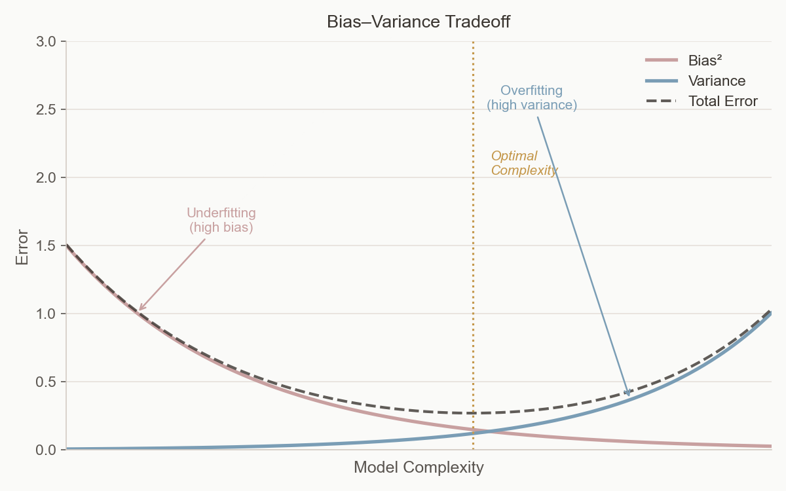
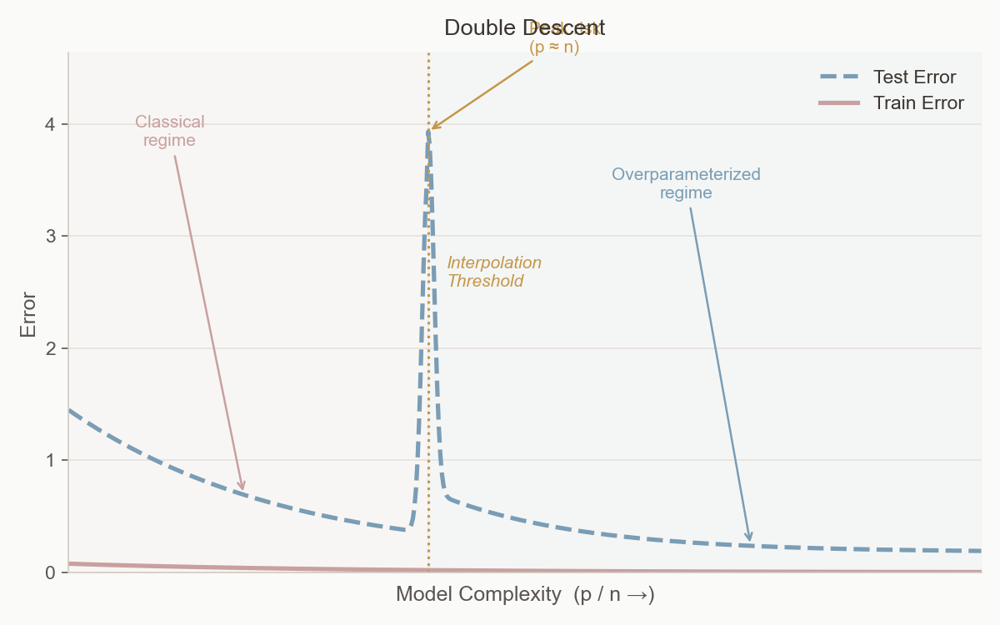

Generalization Error via the Replica Method: Learning in the Hidden Manifold Model
Generalization Error and Classical Learning Theory
Supervised Learning
In supervised learning, we are given a dataset \[ D = \{ (\mathbf{x}^\mu), y^\mu \}_{\mu = 1}^n \] where each \(\mathbf{x}^\mu\) is a feature vector and \(y^\mu\) is the corresponding label or target value. We assume the data is generated by a true underlying function, called the “teacher” model: \[ y^\mu = f(\mathbf{x}^\mu) + \epsilon \] where \(\epsilon\) is zero-mean noise.
Our goal is to learn a “student” model \(\hat{f}_\mathbf{\theta}(\mathbf{x})\), parameterized by \(\theta\), that approximates the teacher as closely as possible. To measure performance, we typically minimize the mean squared error (MSE) between predictions and true values.
Training Loss and Test Loss
Training loss is the error computed on the data used to fit the model. It measures how well the model fits the training set. Test loss (or generalization error) is the error on new, unseen data. A model that fits the training data perfectly may not generalize well to new data (overfitting).
Bias, Variance, and Generalization Error
The expected test error can be decomposed into three terms: \[\mathbb{E}_{\epsilon , D}[(y - \hat{f}(x;D))^2] = (\textrm{Bias}(\hat{f}(x,D)))^2 + \textrm{Var}[\hat{f}(x,D)] + \sigma^2\]
- Bias measures the error due to incorrect model assumptions (e.g., using a linear model for nonlinear data). High bias means the model is too simple and underfits.
- Variance measures how much the model’s predictions change if we use a different training set. High variance means the model is too sensitive to the training data and overfits.
- Irreducible error (\(\sigma^2\)) is the noise inherent in the data generation process, which cannot be reduced by any model.
Mathematically, \[\textrm{Bias}[\hat{f}(x,D)] = \mathbb{E}_D[\hat{f}(x;D) - f(x)]\] \[\textrm{Var}_D[\hat{f}(x,D)] = \mathbb{E}_D\left[ (\hat{f}(x;D) - \mathbb{E}_D[\hat{f}(x;D)])^2 \right]\] \[\sigma^2 = \mathbb{E}_y [ (y - f(x))^2]\]
The bias-variance tradeoff describes how increasing model complexity typically decreases bias but increases variance. The optimal model minimizes the sum of bias², variance, and irreducible error, achieving the lowest possible generalization error.

Double Descent and Overparameterization

Generative Model
We are considering a high dimensional regression/classification problem. The problem is specified by a model and a dataset \(\mathcal{D}\)
We define the dataset \[ D = \{ (\mathbf{x}^\mu), y^\mu \}_{\mu = 1}^n \]
\[\begin{equation*} y^\mu = f^0\left(\frac{1}{d} \mathbf{c}^\mu \cdot \mathbf{\theta}^0\right) \end{equation*}\]
Where the features \(\mathbf{x}^\mu\) are vectors in \(\mathbb{R}^p\) and \(y^\mu \in \mathbb{R}\) is the corresponding predictor.
We will adopt a student-teacher framework to understand the learning process. In this frame we specify a generative model known as a teacher which generates a dataset using a predefined stochastic process and a student which attempts to learn a set of parameters to generate this dataset.
In this case there are several ways to think about the teacher process we are talking about. We will first consider the following. A \(d\) dimensional dataset is generated and then is projected into a \(p\) dimensional space before a non-linearity. This so-called hidden manifold model mimics a structured dataset where points fit on a low dimensional structure.
The generative model is specified as follows
NoteGenerative Model
Generate Latent Vectors: For each datapoint \(\mu\) we draw a latent vector \(\mathbf{c}^\mu \sim \mathcal{N}(\mathbf{0}, I_d)\). This represents the low-dimensional latent structure of the data.
Generate Labels: We select a vector \(\mathbf{\theta}^0 \in \mathbb{R}^d\) from some distribution \(P_\theta(.)\). This represents the ground truth direction in our latent space. Labels for our data will be determined based on the similarity to this vector. The labels are generated by taking a dot product between our latent vectors \(\mathbf{c}^\mu\) and our ground truth vector \(\mathbf{\theta}^0\) and passing the result through a linear or non-linear function \(f^0(\cdot)\). \[ y^\mu = f^0\left(\frac{1}{d} \mathbf{c}^\mu \cdot \mathbf{\theta}^0\right) \]
Generate Data Points: We generate our \(p\) dimensional datapoints by applying a random non-linear transformation, where \(F \in \mathbb{R}^{\times p}\) is a random matrix which acts as a random linear transformation from a \(d\) dimensional latent space to a \(p\) dimensional data space. A function (linear or non-linear) \(\sigma(\cdot)\) is then applied to each vector—this “hides” the linear structure of our generative process. Note: This process can also be viewed as passing the data through a single-layer perceptron with random weights. \[ \mathbf{x}^\mu = \sigma\left(\frac{1}{\sqrt{d}} F^\top \mathbf{c}^\mu \right) \]
Student Model
Given a dataset \(\mathcal{D}\), a student model attempts to minimize a loss function.
The student model makes predictions \[ y^\mu = \hat{f}(\mathbf{x}^\mu \cdot \mathbf{\hat{w}}) \]
Where the weights \(\mathbf{\hat{w}}\) minimize the following loss function \[ \mathbf{\hat{w}} = \underset{\mathbf{w}}{\arg\min} \left[ \sum_{\mu = 1}^n \ell(y^\mu, \mathbf{x}^\mu \cdot \mathbf{w}) + \frac{\lambda}{2} ||\mathbf{w}||_2^2 \right] \]
Where \(\ell(y^\mu, \hat{y}^\mu)\) is a convex loss function. Note: The convexity of the loss function is important because it is required for the replica symmetric solution to hold.
\[ \ell(y^\mu, \hat{y}^\mu) = \begin{cases} (y^\mu - \hat{y}^\mu)^2 & \text{if regression} \\ \log(1 + e^{-\hat{y}^\mu y^\mu}) & \text{if classification} \end{cases} \]
We can define two kinds of error \(\epsilon_g\), the generalization error, and the training error \(\epsilon_t\).
The training error is defined as the empirical risk over our training data \(\mathcal{D}\) \[ \epsilon_t = \frac{1}{n} \sum_{\mu=1}^n \ell(y^\mu, \hat{y}^\mu) + \frac{\lambda}{2} ||\mathbf{\hat{w}}||_2^2 \]
While the training loss is bounded from below, the loss is not.
The generalization error \(\epsilon_g\) is defined as the loss on a new dataset generated from a teacher model with the same parameters \[ \epsilon_g = \frac{1}{4^k n} \mathbb{E}_{\mathbf{x}^{\textrm{new}}, y^{\textrm{new}}} \left[ \ell(y^{\textrm{new}}, \hat{y}^{\textrm{new}}) \right] \]
Note
We want to write the generalization error in a suggestive form. First, we will define \[ \lambda_\mu = \mathbf{w} \cdot \sigma\left(\frac{1}{d} F^\top \mathbf{c}^\mu \right) \]
We could think about this as the ‘preactivation’ or the linear output of our GLM before the non-linearity is applied.
Secondly, we define \[ \nu_\mu = \frac{1}{\sqrt{d}} \mathbf{c}^\mu \cdot \mathbf{\theta}^0 \]
This is the similarity between a given latent vector and the ‘ground truth’ before the non-linearity is applied.
In terms of these two quantities, we can write \[ \epsilon_g = \frac{1}{n} \sum_{\mu = 1}^n \left( f^0(\nu_\mu) - \hat{f}(\lambda_\mu) \right)^2 \]
This is going to be important because we will show that in the limit of an infinite number of features, \(\nu_\mu\) and \(\lambda_\mu\) are going to be distributed according to a Gaussian distribution \(\nu_\mu, \lambda_\mu \sim \mathcal{N}(0, \Sigma)\) with zero mean and a covariance matrix \(\Sigma\) which can be calculated from thermodynamic potentials.
This will become important.
Plan of the Proof
- Define a Gibbs distribution where the energy is the loss of our student model. As the inverse temperature \(\beta \to \infty\), we can analyze the behavior of the optimized model.
- The generalization error can be calculated from the free energy. In order to express the free energy, we will use the replica trick.
- Once we write down the partition function for the replicated system \(Z_\beta^r\), we can then invoke Replicated Generalized Gaussian Equivalence to show that our system is equivalent to a linear model with data drawn from a Gaussian distribution with a given covariance matrix \(\Sigma\). The elements of this covariance matrix are related to the overlap between replicated systems.
- We use a replica symmetric ansatz, which holds for convex loss functions. This reduces the number of parameters our model depends on.
- We can then express the quenched average of our replicated partition function as a saddle point integral of the replica symmetric potential.
- By taking the limit of this function as \(\beta \to \infty\), we can express the free energy replica symmetric potential in terms of the overlap parameters for the optimized system.
- We derive a set of self-consistent saddle point equations for the values of these optimized overlap parameters. By iterating these equations, we can find the fixed points which correspond to the correct value of the optimized parameters.
- We can then express the generalization error in terms of the optimized overlap values.
Free Energy and Statistical Physics
In order to compute the average generalization error for the ensemble, we will use methods first developed for the statistical physics of disordered systems. The general approach is to define a Gibbs measure over our ensemble where the Hamiltonian is replaced with our loss function. The minimum energy of our system corresponds to the correct optimization of our loss function. By calculating quantities using this ensemble and taking the inverse temperature \(\beta \to \infty\), the system concentrates on the set of weights with the lowest training loss, and we can analyze the behavior of the optimized system.
Before we continue, it is necessary to explain the connection between statistical learning problems and statistical physics in slightly more detail.
First, we define a Gibbs measure \[ \mu_\beta( \mathbf{w} | \{ \mathbf{x}^\mu, y^\mu \}) = \frac{1}{\mathcal{Z}_\beta} \exp\left( - \beta \left[ \sum_{\mu=1}^n \ell(y^\mu, \hat{y}^\mu) + \frac{\lambda}{2} ||\mathbf{w}||_2^2 \right] \right) \]
In a twist which is either completely trivial or incredibly deep, the Gibbs measure can be rewritten in the form of a Gibbs ensemble. The Gibbs measure exactly corresponds to the posterior in a Bayesian model: \[ \underbrace{\mu_\beta( \mathbf{w} | \{ \mathbf{x}^\mu, y^\mu \})}_{\text{Posterior} \quad P(\mathbf{w} | \mathcal{D}) } = \underbrace{\prod_{\mu = 1}^n \frac{1}{\mathcal{Z}_\beta} \exp\left( - \beta \sum_{\mu=1}^n \ell(y^\mu, \hat{y}^\mu) \right)}_{\text{Likelihood} \quad P(\mathcal{D} | \mathbf{w}) } \underbrace{\prod_{i = 1}^p \exp\left( - \beta \frac{\lambda}{2} ||\mathbf{w}||_2^2 \right)}_{\text{Prior} \quad P(\mathbf{w})} \]
So we can then define the free energy density \[ f_\beta(\mathcal{D}) = -\frac{1}{\beta p} \ln \mathcal{Z}_\beta \]
Suppressing the \(\mathcal{D}\) dependence, we can write \[ \ln \mathcal{Z}_\beta = e^{- p \beta f_\beta} \]
In a standard result from statistical physics, we can show that deviations from the average for the free energy density \(f_\beta\) are exponentially rare. The quantity is self-averaging. \[ P(f) \sim \exp(p \Phi(f)) \]
Where \(\Phi(f)\) is a convex function with its minimum \(\Phi(f) = 0\) at the mean of \(f\).
The Replica Trick
TipWhat is the Replica Trick?
The replica trick is an important but seemingly strange method to compute partition functions for disordered systems. We can express the partition function \(Z_\beta\). Then we can rewrite \(Z_\beta^n\) by taking the exponential of the log \[ Z_\beta^n = \exp(n \ln Z_\beta) \]
Notice if we take a derivative \[ \frac{\partial Z_\beta^n}{\partial n} = \ln Z_\beta \cdot e^{n \ln Z_\beta} = Z_\beta^n \ln Z_\beta \]
We can Taylor expand \(Z_\beta^n\) as \[ Z_\beta^n = 1 + n \ln Z_\beta + \frac{n^2}{2} (\ln Z_\beta)^2 + \dots \]
Plugging this into our derivative, we get \[ \frac{\partial Z_\beta^n}{\partial n} = \ln Z_\beta \left(1 + n \ln Z_\beta + \frac{n^2}{2} (\ln Z_\beta)^2 + \dots \right) \]
Now if we take the limit \[ \lim_{n \to 0} \frac{\partial Z_\beta^n}{\partial n} = \lim_{n \to 0} \ln Z_\beta \left(1 + n \ln Z_\beta + \frac{n^2}{2} (\ln Z_\beta)^2 + \dots \right) \]
Taking this limit, terms with \(n\) dependence vanish and we get \[ \lim_{n \to 0} \frac{\partial Z_\beta^n}{\partial n} = \ln Z_\beta \]
Now since \(\mathcal{D} = \{ \mathbf{x}^\mu, y^\mu \}\) represent configurations of our system, we can represent our partition function.
This means that we can write express the partition function which will have \(r\) times the energy of our original system \[ \ln \mathcal{Z}_\beta^r = e^{- p r \beta f_\beta} \]
Now we want to calculate the quenched average of the partition function \[ \mathbb{E}_{\mathcal{D}} [Z_\beta^{r}] = \int P(f) e^{- p r \beta f} df \]
Substituting our values for \(P(f)\) and \(\ln \mathcal{Z}_\beta^r\) \[ \mathbb{E}_{\mathcal{D}} [Z_\beta^{r}] = \int e^{p [\Phi(f) - r \beta f]} df \]
Then we can use the identity we developed for our replica symmetric system to show that (taking the thermodynamic limit and exchanging the order the limits are taken in) \[ f_\beta = -\frac{1}{p} \ln \mathcal{Z}_\beta = \lim_{r \to 0^+} \frac{d}{dr} \lim_{p \to \infty} \left[ -\frac{1}{p} \mathbb{E}_{\mathcal{D}} [ Z_\beta^r ] \right] \]
Now let’s take seriously the idea of the replicated system. If we have \(r\) identical and independent copies of our replicated system indexed by \(a\), then \[ \mathbb{E}_{\{ \mathbf{x}^\mu, y^\mu \}} [ Z_\beta^r ] = \underbrace{\int d\mathbf{\theta}^0 P_\theta(\mathbf{\theta}^0)}_{\text{(I: $\mathbf{\theta}^0$)}} \underbrace{\int \prod_{a=1}^r d\mathbf{w}^a P_w(\mathbf{w}^a)}_{\text{(II: $\mathbf{w}^a$)}} \underbrace{\prod_{\mu=1}^n \int dy^\mu}_{\text{(III: $y^\mu$)}} \underbrace{\mathbb{E}_{\mathbf{c}^\mu} \left[ P_y^0 \left( y^\mu \Big| \nu_\mu \right) \prod_{a=1}^r P_y \left( y^\mu \Big| \lambda_\mu^a \right) \right]}_{\text{(IV: $\hat{y}^\mu$)}} \]
Now we can see that our partition function depends on the joint probability \(P(\nu_\mu, \lambda_\mu^a)\).
Replicated Gaussian Equivalence
We can show that \[ P(\nu_\mu, \lambda_\mu^a) = \mathcal{N}(0, \Sigma) \]
The elements of this matrix are related to the overlap parameters. To understand these, let’s first define \(\mathbf{s}^a\) to be the projection of the weights in the \(a\)th replica \(\mathbf{w}^a\) into the random feature space.
NoteWhat is \(\mathbf{s}^a\)
We define \(\mathbf{s}^a\) as follows: \[ \mathbf{s}^a = \frac{1}{\sqrt{p}} F \mathbf{w}^a \]
Why is this important? If we have no non-linearity \(\sigma\), our data points are generated as \[ y^\mu = \frac{1}{\sqrt{d}} \mathbf{w}^a \cdot F^\top \mathbf{c}^\mu \]
We can see that \[ \hat{y}_\mu^a = \mathbf{w}^a \cdot F^\top \mathbf{c}^\mu \propto \mathbf{s}^a \cdot \mathbf{c}^\mu \]
Since the teacher generated data as \[ y^\mu \propto \mathbf{\theta}^0 \cdot \mathbf{c}^\mu \]
\(\mathbf{s}^a\) represents our model’s reconstruction of the latent \(\mathbf{\theta}^0\). The closer \(\mathbf{s}^a\) is to \(\mathbf{\theta}^0\), the better our model can generalize.
We can define the overlap parameters as
\(\rho\) measures the 2-norm or the self-overlap \(\mathbf{\theta}^0 \cdot \mathbf{\theta}^0\) of the ground truth vector in latent space. \[ \rho = \frac{1}{d} || \mathbf{\theta}^0 ||^2 \]
Next, \(m_s^a\) represents the similarity between \(\mathbf{\theta}^0\) and \(\mathbf{s}^a\); the higher this quantity is, the better the ability of the \(a\)th replica to generalize. \[ m_s^a = \frac{1}{d} \mathbf{s}^a \cdot \mathbf{\theta}^0 \]
Now, \(q_s^{ab}\) represents the overlap between the latent representations of two replicas in the random feature space (or student space). \[ q_s^{ab} = \frac{1}{d} \mathbf{s}^a \cdot \mathbf{s}^b \]
Now, \(q_w^{ab}\) represents the overlap between the representations of two replicas in the space of weights. \[ q_w^{ab} = \frac{1}{d} \mathbf{w}^a \cdot \mathbf{w}^b \]
Now, remember we are leveraging replicated Gaussian equivalence; this lets us replace our non-linear model with a linear model and data drawn from a Gaussian distribution. The above overlaps neglect this non-linearity. We have to compensate for it by scaling our overlap parameters. First, let’s define
\[ \kappa_0 = \mathbb{E}_z(\sigma(z)) \quad \textrm{and} \quad \kappa_1 = \mathbb{E}_z [ z \sigma(z) ] \quad \textrm{and} \quad \kappa_\star^2 = \mathbb{E}_z [ \sigma(z)^2 ] - \kappa_1^2 - \kappa_0^2 \]
Intuitively, this scaling accounts for the effect of the non-linearity on the output.
With the \(\kappa\) factors, we can finally write \[ M_a = \kappa_1 m_s^a \quad \text{and} \quad Q^{ab} = \kappa_\star^2 q_w^{ab} + \kappa_1^2 q_s^{ab} \]
With these terms, we can finally write the covariance as \[ \Sigma^{ab} = \begin{pmatrix} \rho & M_a \\ M_a & Q^{ab} \end{pmatrix} \]
Replica Symmetric Ansatz
Next we want to assume that the overlaps for all the replicas have the same value. This is equivalent to assuming that
\[m_s^a = m_s \quad q_s^{ab} = q_s \quad q_w^{ab} = q_w \quad \forall a\]
We can rewrite the quenched average of our replicated partition function as a saddle point integral with respect to the three replica symmetric overlap parameters
\[\mathbb{E}[{Z_\beta^r}] \propto \int d q_s dq_w d m_s e^{(p \Phi^{(r)}_\beta(m_s, q_s, q_w))} \]
If we take the limit of \(p \to \infty\) and \(r \to 0\) this saddle point integral concentrates around \(\Phi^0_\beta(m_s,q_s,q_w)\).
But we care about the extremum \[ f_\beta = - \lim_{r \to 0} \frac{1}{r} \mathbb{E}[{Z_\beta^r}] \propto - \lim_{r \to 0} \frac{1}{r} \underset{m_s,q_s,q_w}{\textbf{extremum}} \quad \Phi_\beta^{(r)}(m_s,q_s,q_w) \]
Now what we care about is the optimal solution to this problem with the minimum loss function. This is the \(\beta \to \infty\) limit. We define the overlaps in this limit as \(\{ q_w^\star, q_s^\star, m_s^\star \}\)
The free energy for the optimized system
\[ f^\star = \underset{m_s,q_s,q_w}{\textbf{extremum}} \quad \Phi_\beta^{(0)}(m^\star_s,q^\star_s,q^\star_w) \]
We can then derive a set of self-consistent saddle point equations to find the values of these parameters.
CautionSelf Consistent Saddle Point Equations
The values of these parameters correspond to the solution of the optimisation problem in eq. (1.6), and can be obtained as the fixed point solutions of the following set of self-consistent saddle-point equations:
\[\begin{equation} \begin{aligned} \widehat{V}_s &= \frac{\alpha \kappa_1^2}{\gamma V_s^2} \mathbb{E}_\xi \left[ \int_{\mathbb{R}} \mathrm{d}y \, \mathcal{Z}(y, \omega_0) \partial_\omega \eta(y, \omega_1) \right], \\ \widehat{q}_s &= \frac{\alpha \kappa_1^2}{\gamma V_s^2} \mathbb{E}_\xi \left[ \int_{\mathbb{R}} \mathrm{d}y \, \mathcal{Z}(y, \omega_0) \left( \eta(y, \omega_1) - \omega_1 \right)^2 \right], \\ \widehat{m}_s &= \frac{\alpha \kappa_1}{\gamma V_s} \mathbb{E}_\xi \left[ \int_{\mathbb{R}} \mathrm{d}y \, \partial_\omega \mathcal{Z}(y, \omega_0) \left( \eta(y, \omega_1) - \omega_1 \right) \right], \end{aligned} \end{equation}\]
\[\begin{equation} \begin{aligned} \widehat{V}_w &= \frac{\alpha \kappa_2^2}{V_w^2} \mathbb{E}_\xi \left[ \int_{\mathbb{R}} \mathrm{d}y \, \mathcal{Z}(y, \omega_0) \partial_\omega \eta(y, \omega_1) \right], \\ \widehat{q}_w &= \frac{\alpha \kappa_2^2}{V_w^2} \mathbb{E}_\xi \left[ \int_{\mathbb{R}} \mathrm{d}y \, \mathcal{Z}(y, \omega_0) \left( \eta(y, \omega_1) - \omega_1 \right)^2 \right]. \end{aligned} \end{equation}\]
\[\begin{equation} \begin{aligned} V_s &= \frac{1}{\widehat{V}_s} \left( 1 - z g_\mu(-z) \right), \\ q_s &= \frac{\widehat{m}_s^2 + \widehat{q}_s}{\widehat{V}_s^2} \left[ 1 - 2z g_\mu(-z) + z^2 g_\mu'(-z) \right] - \frac{\widehat{q}_w}{\lambda + \widehat{V}_w} \left[ -z g_\mu(-z) + z^2 g_\mu'(-z) \right], \\ m_s &= \frac{\widehat{m}_s}{\widehat{V}_s} \left( 1 - z g_\mu(-z) \right). \end{aligned} \end{equation}\]
\[\begin{equation} \begin{aligned} V_w &= \frac{\gamma}{\lambda + \widehat{V}_w} \left[ \frac{1}{\gamma} - 1 + z g_\mu(-z) \right], \\ q_w &= \gamma \frac{\widehat{q}_w}{\left( \lambda + \widehat{V}_w \right)^2} \left[ \frac{1}{\gamma} - 1 + z^2 g_\mu'(-z) \right] \\ &\quad + \frac{\widehat{m}_s^2 + \widehat{q}_s}{\left( \lambda + \widehat{V}_w \right) V_s} \left[ -z g_\mu(-z) + z^2 g_\mu'(-z) \right]. \end{aligned} \end{equation}\]
written in terms of the following auxiliary variables \(\xi \sim \mathcal{N}(0,1)\), \(z = \frac{\lambda + \widehat{V}_w}{V_s}\), and functions:
\[\begin{equation} \begin{aligned} \eta(y, \omega) &= \arg\min_{x \in \mathbb{R}} \left[ \frac{(x - \omega)^2}{2V} + \ell(y, x) \right], \\ \mathcal{Z}(y, \omega) &= \int_{\mathbb{R}} \frac{\mathrm{d}x}{\sqrt{2 \pi V^0}} e^{-\frac{1}{2V^0} (x - \omega)^2} \delta \left( y - f^0(x) \right), \end{aligned} \end{equation}\]
where \(V = \kappa_1^2 V_s + \kappa_2^2 V_w\), \(V^0 = \rho - \frac{M^2}{Q}\), \(Q = \kappa_1^2 q_s + \kappa_2^2 q_w\), \(M = \kappa_1 m_s\), \(\omega_0 = M / \sqrt{Q}\), and \(\omega_1 = \sqrt{Q} \xi\).
The above block shows the self consistent equtions which are quite cumbersome. Notice that there are the equations only depend on a handful of parameters. \(\lambda\), the lagrange multiplier for the ridge regression, \(\alpha = \frac{n}{p}\) the number of datpoints per dimension, \(\gamma = \frac{p}{d}\) the ratio between the latent and observed dimensions. It also depends on \(g_\mu(z)\) which is the Stieltjes transform of the spectral density \(\mu\) for out random feature matrix \(FF^T\). This is important because it the generalization error only depends on the spectral properties of the random matrix. In the case of an \(F\) with iid gaussian elements, the spectral density follows a Marchenko-Pastur distribution and its Stijles transform has the followingg form
TipSpectral Norms and Stijlez Transforms
Spectral Norm, Stieltjes Transform
The spectral norm of a matrix ( A ^{n n} ), denoted ( |A| ), is the largest singular value of the matrix, which corresponds to the largest eigenvalue of ( A ) (in absolute value) if ( A ) is symmetric. Mathematically: \[ \|A\| = \max_{\|x\| = 1} \|Ax\|. \] The spectral norm is crucial in analyzing the convergence and stability properties of matrix-based systems.
The spectral measure of a matrix ( A ) is a probability measure that describes the distribution of its eigenvalues. Formally, for a symmetric matrix ( A ), the spectral measure is: \[ \mu_A(\lambda) = \frac{1}{n} \sum_{i=1}^n \delta(\lambda - \lambda_i), \] where ( {i}{i=1}^n ) are the eigenvalues of ( A ) and ( ) is the Dirac delta function.
This measure provides a compact description of the spectrum and is widely used in the study of random matrices and high-dimensional statistical physics.
Stieltjes Transform
The Stieltjes transform is a powerful tool to analyze the spectral measure of matrices. Given a probability measure ( ) (e.g., the spectral measure of a matrix ( A )), the Stieltjes transform is defined as: \[ g_\mu(z) = \int_{\mathbb{R}} \frac{\mu(\lambda)}{\lambda - z} \, d\lambda, \quad z \in \mathbb{C} \setminus \mathbb{R}. \] This function is analytic in the complex plane outside the real axis and encodes the distribution of eigenvalues. Key properties include: - ( g_(z) ) provides information about the density of eigenvalues near a given point in the spectrum. - In the limit ( z ), the Stieltjes transform relates to the first moment of the measure: \[ \lim_{z \to \infty} z g_\mu(z) = 1. \]
Marchenko-Pastur Distribution and Its Stieltjes Transform
The Marchenko-Pastur distribution is a probability distribution that describes the limiting spectral measure of sample covariance matrices in the high-dimensional limit. Specifically, for a covariance matrix ( X^X ), where ( X ^{n d} ) has independent, identically distributed entries with zero mean and unit variance, the eigenvalue density ( () ) is: \[ \rho_\text{MP}(\lambda) = \frac{1}{2\pi \lambda} \sqrt{(\lambda_+ - \lambda)(\lambda - \lambda_-)}, \quad \lambda \in [\lambda_-, \lambda_+], \] where ( = (1 )^2 ) and ( c = ) is the aspect ratio.
The Stieltjes transform of the Marchenko-Pastur distribution is: \[ g_\text{MP}(z) = \frac{1 - c - z + \sqrt{(z - \lambda_-)(z - \lambda_+)}}{2cz}, \quad z \in \mathbb{C} \setminus [\lambda_-, \lambda_+]. \] Here, the square root is taken with a branch cut along ( [-, +] ).
Generalization Error
Finally the error can be expressed in terms of the optimum overlaps.
For the generalization error \(\epsilon_g\) we have
Generalization Error
\[\epsilon_g = \rho + Q^\star - 2M^\star\]
for regression and
\[\epsilon_g = \frac{1}{\pi} \cos^{-1}(\frac{M^\star}{\sqrt{Q^\star}})\]
for classification.
In the case of regression the loss increases with the norm of our weights and decreases as the alignment between \(\mathbf{s}\) and \(\theta^0\). In the case of classification it depends only on the actual angle between these two vectors.
Training Error
The training error \(\epsilon_t\) is a more complicated form \[ \lim_{n \to \infty} \epsilon_t \to \frac{\lambda}{2\alpha} q_w^\star + \mathbb{E}_{\xi, y} \left[ \mathcal{Z}(y, \omega_0^\star) \ell \left( y, \eta(y, \omega_1^\star) \right) \right] \]
where as before $ (0, 1)$,
\(y\sim\text{Uni}(\mathbb{R})\), and \(\mathcal{Z},\eta\) are the same as in the block above, evaluated at the solution of the above saddle-point equations: \[ \omega_0^\star = M^\star / \sqrt{Q^\star} \quad \text{and} \quad \omega_1^\star = \sqrt{Q^\star} \xi. \]
Interactive Results
This section presents interactive visualizations of the generalization error analysis from our corrected implementation of the fixed point equations D.22-D.25.
The interactive plots allow you to: - Adjust regularization λ: See how regularization affects the double descent phenomenon - Select nonlinearity: Compare different activation functions (sign, erf) - Choose task type: Switch between classification and regression - Control noise level: For regression tasks, adjust the noise parameter Δ
Key Observations
- Double Descent Spike: For low regularization (λ ≤ 0.01), observe the characteristic spike in generalization error at p/n ≈ 1
- Regularization Effect: Higher λ values smooth out the spike and reduce overall error
- Nonlinearity Impact: Different activation functions show varying sensitivity to the interpolation threshold
- 3D Surface: The surface plot reveals the complex relationship between sample ratio (n/d), feature ratio (p/n), and generalization performance
Technical Notes
The visualizations are based on our corrected implementation of the replica method equations from the Gerace et al. (2021) paper. Key corrections made:
- Fixed classification formulas: Removed erroneous √2 factor in equations D.26
- Corrected sign error: Fixed the sign in the q_w equation D.23
- Proper theoretical foundation: Implemented the systematic iterative approach from D.22-D.25
Parameters Used
- Sign nonlinearity: κ₁ = √(2/π) ≈ 0.798, κ* = √(1-2/π) ≈ 0.602
- Erf nonlinearity: κ₁ = 2/√(3π) ≈ 0.650, κ* ≈ 0.200
- Regularization range: λ ∈ [10⁻⁴, 1.0]
- Noise levels: Δ ∈ [0.0, 1.0] for regression
Double Descent Phenomenon
The interactive plots clearly demonstrate the double descent behavior predicted by the theory:
- Classical regime (p/n < 1): Error decreases as model complexity increases
- Interpolation threshold (p/n ≈ 1): Sharp spike in generalization error for low λ
- Overparametrized regime (p/n > 1): Error decreases again as we add more parameters
This behavior matches the theoretical predictions in Figures 3 and 6 of the original paper and validates our corrected implementation.
Use the controls above to explore different parameter combinations and observe how they affect the generalization error landscape.